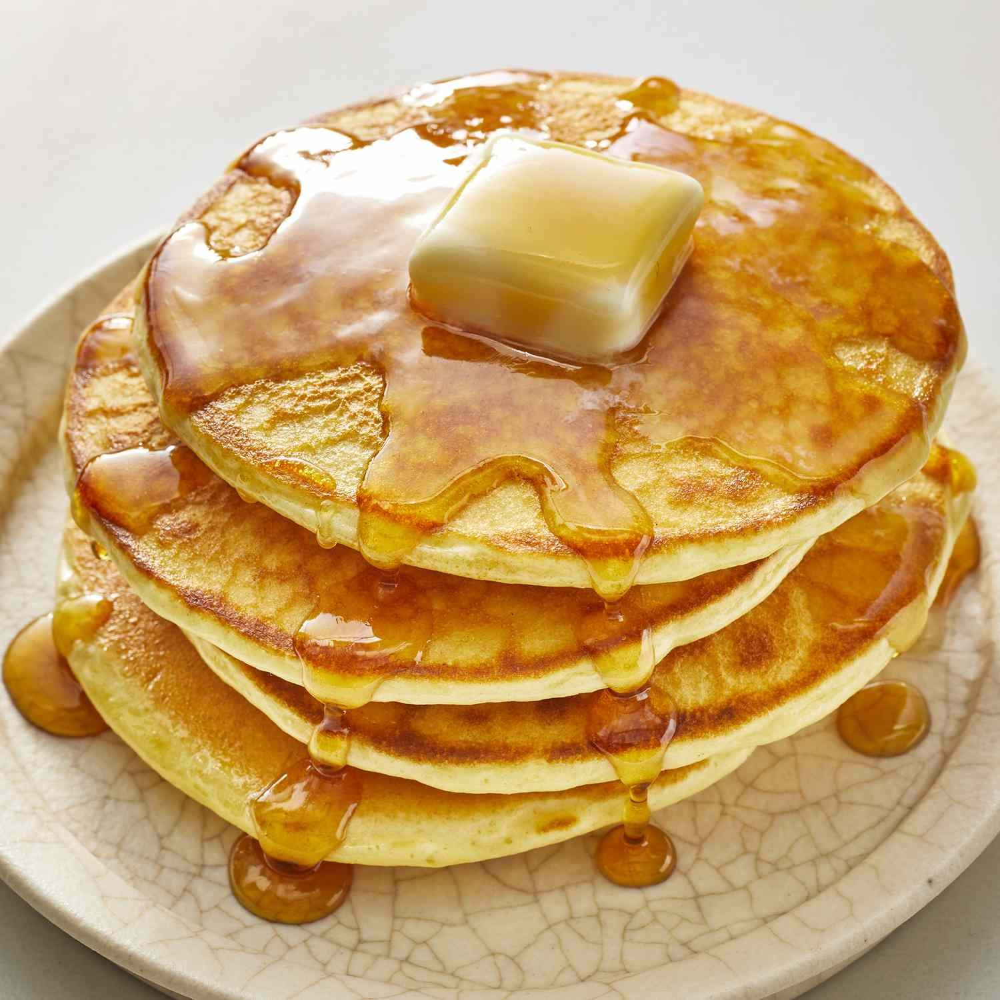

Pancakes
Home

Description
No need to buy premade batter anymore when making your own is this easy!
You just need to mix the dry ingredients, then mix the wet ingredients, mix them together just before cooking
Ingredients
- 3 cups all-purpose flour
- 3 tablespoons white sugar
- 3 teaspoons baking powder
- 1 1/2 teaspoons baking soda
- 3/4 teaspoon salt
- 3 cups buttermilk
- 1/2 cup milk
- 3 large eggs
- 1/3 cup butter, melted
Steps
- Combine flour, sugar, baking powder, baking soda, and salt in a large bowl. Beat buttermilk, milk, eggs,
and
melted butter together in a separate bowl. Keep the two mixtures separate until you are ready to cook.
- Heat a lightly oiled griddle or frying pan over medium-high heat. You can flick water across the surface
and
if it beads up and sizzles, it's ready.
- Pour the wet mixture into the dry mixture; use a wooden spoon or fork to mix until it's just blended
together. The batter will be a little lumpy which is what you want.
- Pour or scoop batter onto the preheated griddle, using approximately 1/2 cup for each pancake. Cook
until
bubbles appear on the surface, 1 to 2 minutes; flip with a spatula and cook until browned on the other
side.
Repeat with remaining batter.
- Serve hot and enjoy!